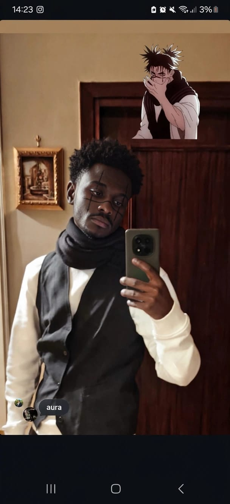
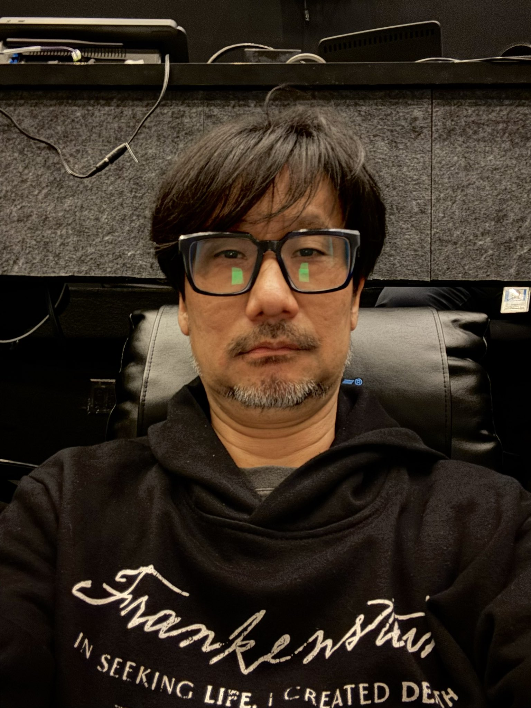

Smegmasum
Dedicated to my friend Gelo who is not among us anymore
Gelo was born in a strange place with hairy oily black men, but this did not stop him to become the first asian lesbian to become president of Ottaviano.
Gelo bought a smegmasum to play Valorant with his gay black friend "Garbussy the B", gelo was a good kid in a bad world, call him Big Cock.
Life in Ottaviano City as a trans man was not easy for him but he had enough courage to withstand everything thanks to his family, thank you gelo for all the things you did for the queer community.
Gelazzo Dal Taglio lost his bus on the 10th of november, but this did not discourage him from changing the world thanks to his smegmasung, keep up the great work
Gelo bought a smegmasum to play Valorant with his gay black friend "Garbussy the B", gelo was a good kid in a bad world, call him Big Cock.
Life in Ottaviano City as a trans man was not easy for him but he had enough courage to withstand everything thanks to his family, thank you gelo for all the things you did for the queer community.
Gelazzo Dal Taglio lost his bus on the 10th of november, but this did not discourage him from changing the world thanks to his smegmasung, keep up the great work
REST IN POWER


